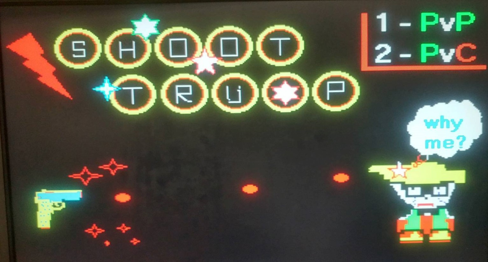
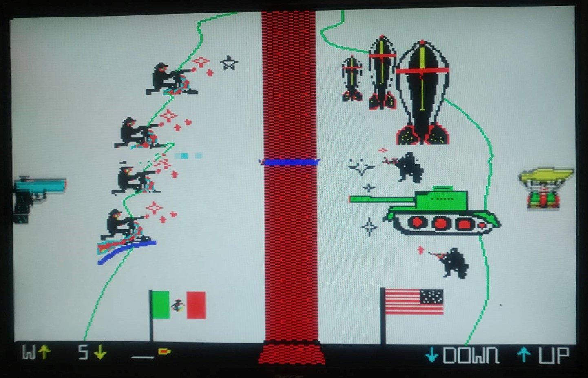
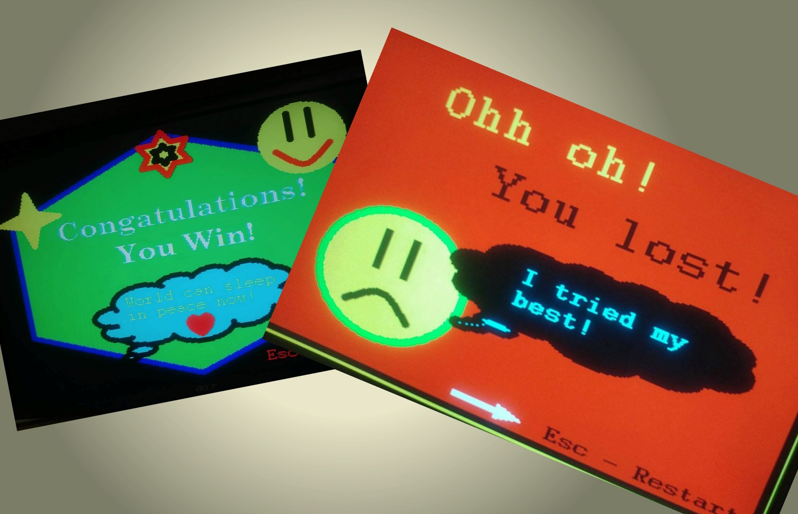

LANGUAGE Verilog
TIME December, 2017 (Digital Logic Final Project)
DESCRIPTION
Following game is buit on Altera's DE1-SoC I, Cyclone V FPGA Board by using a VGA adapter and a PS2 keyboard.
Shoot is a single/double player game which allows the user to shoot down an opponent using a gun.
In a single player game, the target on the right moves automatically.
However, if two payer game is selected, the second user can dodge the bullets, but not shoot.
User on the left is given nine bullets to accomplish the task otherwise, they lose.
If the user is hits target on the right with a bullet, they win.
| Game Display | Description |
|---|---|
|  | Start Page This is the initial page of the game. As displayed on the screen, user has to press 1 or 2 depending on the whether they want to play Player vs. Player or Player vs. Computer. Based on the selection, user is taken to an appropriate game state. |
|  | Game Page The objective of this page is to allow the user to shoot down Trump (if it is a two player game, the user on the right (Trump) can dodge the bullets but not shoot). User is given 9 bullets to shoot the target. As depicted in the picture, when the bullet goes through the wall, it leaves a blue mark on the wall to make it more realistic. |
|  | End Page If the user is unable to get the target, the game goes to the loose page else it goes to the win page. User is given an option to restart the game by simply pressing esc button on the keyboard. |